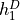
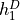
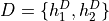
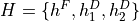
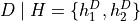

Conditional Probability#
Probability is merely a guess. It is based on whatever currently available information we have. If new information about the outcomes in the sample space becomes available, the probability assigned to the remaining events must be updated to take into account the new state of the world (or more accurately, knowledge of the new state of the world). Conditional probability is the tool for incorporating new information into probability calculations.
Motivation#
- Example
- Suppose three red balls numbered 1 - 3 and four green balls numbered 1 - 4 are placed into a box. A friend selects a ball at random from the box without showing you what she selected.
What is the probability the ball she selected has the number 2 written on it?
If she now tells you the ball she selected is red, how does this affect the probability in part 1?
Let A represent the event of selecting a ball numbered 2. Let B represent the event of selecting a red ball. Then  ,
,  and
and  (Why?) Without taking into account the second part of the problem yet, the Classical Definition of Probability yields the probability the ball she selected has the number 2 written it,
(Why?) Without taking into account the second part of the problem yet, the Classical Definition of Probability yields the probability the ball she selected has the number 2 written it,

This number represents the probability of A without any further information provided about the sample space.
If the friend now informs us the ball she selected was red, then this new information affects the probability. Certain outcomes have been removed from the sample space and are no longer possible. Because your friend revealed the color of the ball, we can discount all outcomes that involve the four green balls numbered 1 - 4. This type of Reduction of Sample Space is called conditioning on the event B. The event of A given B is denoted 
Applying the Classical Definition of Probability to this reduced sample space, we get the probability of selecting a ball with the number 2, given the ball is red,

In other words, knowing the event a red ball was selected has increased the probability the ball has the number 2 written onit. Taking a look at the original sample space, this should be intuitive. There are less red balls than green balls, so more probability is “concentrated” in the red number 2 ball when the green balls are removed from the sample space.
In order to further understand what is going, return to the point in time when your friend has not yet revealed the color she has selected, i.e. before the information the ball is red has become available. Before you know the ball is red, the probability of it being red is given by,

The probability of it being red and having the number 2 written on it is the probability of the Intersection of A and B. Noting  has only outcome in it (Why?), the outcome of a red ball with the number 2 has a probability,
has only outcome in it (Why?), the outcome of a red ball with the number 2 has a probability,

If the event B has occurred, then the only way the event A can now occur is through the event  . The conditional probability of A given the occurrence of B is the ratio of ways A and B can occur to the ways B alone can occur,
. The conditional probability of A given the occurrence of B is the ratio of ways A and B can occur to the ways B alone can occur,

Condtional Probability Formula#
Abstracting from the details from the previous example, the conditional probability of an event A given the occurrence of an event B is defined by the following formula,

An equivalent formula is given in terms of the Cardinality of the sets and B,

- Example
TODO
Solution
TODO
Reduction of Sample Space#
TODO
Formula#

The following example and its accompanying solutions serve to illustrate how conditional probability and the reduction of the sample space can be used to solve problems involving probability.
- Example
A fair, two-sided coin with heads and tails on either side is placed into a box alongside a double-sided coin that has heads on both sides. You select a coin at random from the box and, without looking at which coin you picked, flip it. If the coin lands on heads, what is the probability you selected the two sided coin?
Solution #1: Conditional Probability Formula
Before solving the problem, first set up the sample space and define the events that correspond to its various outcomes.
Let  denote the outcome of getting a head from the flip of the fair, two-sided coin. Let
denote the outcome of getting a head from the flip of the fair, two-sided coin. Let  denote the outcome of getting a tail from the flip of the fair, two sided coin. Let  denote the outcome of getting the first head from the flip of the double-sided coin. Finally, let
denote the outcome of getting a tail from the flip of the fair, two sided coin. Let  denote the outcome of getting the first head from the flip of the double-sided coin. Finally, let  denote the outcome of getting the second head from the flip of the double-sided coin. The sample space for this experiment is then given by the set S,
denote the outcome of getting the second head from the flip of the double-sided coin. The sample space for this experiment is then given by the set S,


The event of selecting the fair coin,  , is made up of the outcomes,
, is made up of the outcomes,


Likewise, the event of selecting the double-sided coin,  , is made up of the outcomes,
, is made up of the outcomes,


The event of getting a head,  , is made up of the outcomes,
, is made up of the outcomes,


The problem can then be expressed in terms of the Condtional Probability Formula,

The denominator of this expression can be found by straight-forward application of the Classical Definition of Probability,

Whereas the numerator first requires calculating the intersection of D and H,


Whereupon the Classical Definition of Probability can be applied again,

The conditional probability of D given the occurrence of H is then calculated from the previously mentioned Condtional Probability Formula,

Solution #2: Reduction of Sample Space Formula
There is another way of looking at this problem. The fact that it is known the outcome of the coin flip was heads effectively reduces the sample space S from,
To a truncated set :math:S mid H, the sample space given the occurence of event H,


In other words, the outcome of tails is removed as a possibility by the additional information a head has been obtained. Then, the event of selecting the two-sided coin conditioned on the event of getting a head remains,


Therefore, by the reduction of sample space formula,


Monty Hall Problem#
TODO
Multiplication Rule#
TODO
The following example illustrates the simplification affected by the introduction of conditional probability into combinatorial problems. This example can be solved in one of two ways. The first solution uses the techniques from the Combinatorics section. The second solution uses the techniques of the Multiplication Rule and Reduction of the Sample Space just discussed. The reader will observe, while both methods yield the same answer, the second method is substantially easier, both from a calculation perpsective and from a conceptual perspective (i.e., it’s easier to understand).
- Example
Two cards are drawn without replacement from a standard deck of 52 playing cards. What is the probability both cards are red?
Solution 1: Combinatorics
A hand of two cards dealt from a deck of 52 cards is equivalent to one of the combinations of 52 distinct objects taken 2 at a time. To find the total number of such combinations, Formula is used,

Therefore, there are a total of 1326 hands that can be dealt.
The same logic can be used to find the number of ways to pick two red cards. Note there are  red cards in a standard deck of playing cards. Therefore, the number of combinations of 26 distinct objects taken 2 at a time is,
red cards in a standard deck of playing cards. Therefore, the number of combinations of 26 distinct objects taken 2 at a time is,

Therefore, the desired probability can be found using the Classical Definition of Probability,

Solution #2: Conditional Probability
Let R 1 represent the event the first card drawn is red. Let R 2 represent the event the second card drawn is red. Then the event  represents the event the first card is red and the second card is red. The Multiplication Rule states the probability of an intersection can be expressed as,
represents the event the first card is red and the second card is red. The Multiplication Rule states the probability of an intersection can be expressed as,

The term  is the probability of selecting a red card on the first draw. This can be calculated easily with the Classical Definition of Probability,
is the probability of selecting a red card on the first draw. This can be calculated easily with the Classical Definition of Probability,

The term  can likewise be quickly decomposed by noticing the event R 1 reduces the sample space to 51 cards, 25 of which are red. Using the Classical Definition of Probability once again, the conditional probability of R 2 given the occurrence of R 1 is,
can likewise be quickly decomposed by noticing the event R 1 reduces the sample space to 51 cards, 25 of which are red. Using the Classical Definition of Probability once again, the conditional probability of R 2 given the occurrence of R 1 is,

Therefore,


TODO
Probability Tables Revisited#
TODO
Independence#
TODO